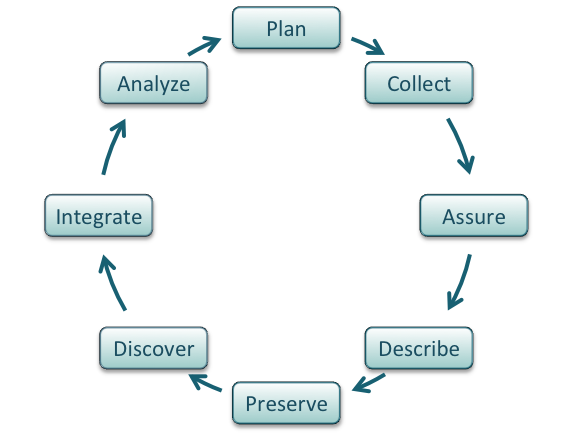

Managing Data for Open Science¶
Learning Objectives
After this lesson, you should be able to:
- Recognize data as the foundation of open science and describe the "life cycle of data".
- Describe how modern cloud and AI technologies transform data management.
- Explain the roles of metadata, schemas, and ontologies in making data AI-ready.
- Cite tools and resources to improve your data management practices, including cloud-native formats and AI-driven techniques.
- Recall the meanings of FAIR, CARE, and TRUST principles.
- Know the biggest challenge to effective data management.
Why Should You Care About Data Management?¶
Ensuring that data are effectively organized, shared, and preserved is critical to making your science impactful, efficient, and open.
Don't Forget About Data Management
The biggest challenge to data management is making it an afterthought.
Unfortunately, poor data management doesn't have a high upfront cost. You can do substantial work before realizing you are in trouble. Like a swimmer in a rip current, by the time you realize you are in trouble, you may already be close to drowning.
The solution? Make data management the first thing you consider when starting a research project. It also needs to be a policy you institute right away for your research group.
Scenario 1: Sharing your data
You give unpublished data to a colleague who has not been involved with the project
Could they make sense of it?
Have you included a README.md that describes the structure of the data?
Will they be able to use it properly?
Have you included any user documentation that follows your work to make it reproducible?
Its been five years since you looked at the data
Let's be honest here, the person who is most likely to handle your unpublished data is YOU.
Don't be afraid to admit how much time you've have spent looking at a project that is five years, five months, or five weeks old.
We have all struggled to understand what file names mean, what units table values are in, or what methods were originally used to generate the data.
By using best-practices for data management, you can save your most valuable resource, time  !
!
Well-managed Data Sets:
- Make life much easier for you and your collaborators.
- Benefit the scientific research community by allowing others to reuse your data.
-
Are required by most funders,
"Agencies should encourage depositing raw data and code that contributes to research outcomes in publicly accessible repositories, where appropriate, to facilitate exact replication and support reproducibility through diverse methodological approaches. Agencies should address barriers—such as incomplete reporting or resource constraints—by fostering training, shared infrastructure, and incentives for open science practices. "
-
Leading journals in molecular and cellular biology (MCB) now frequently mandate public data deposition for published research, enhancing reproducibility.
The resources below are key for publishing and citing MCB data.
| Journal/Resource | Voluntary Data Publication | Mandatory Data Publication | Provides DOI for Datasets |
|---|---|---|---|
| Nature | ✔ | ||
| Cell | ✔ | ||
| Science | ✔ | ||
| PNAS | ✔ | ||
| eLife | ✔ | ||
| PLOS Biology | ✔ | ||
| Dryad | ✔ | ✔ | |
| Figshare | ✔ | ✔ | |
| Zenodo | ✔ | ✔ | |
| NCBI | ✔ | ✔ | |
| Protein Data Bank (PDB) | ✔ | ✔ |
Scenario 2: Sharing your data
When you are ready to publish a paper, is it easy to find all the correct versions of all the data you used and present them in a comprehensible manner?
Where are the data?
Easy, it is lost
Data loss is an all too real problem that occurs to researchers at the least expected moments.
Offline back up and mirrored (double) copies
- Keep an online sync of your data
- Storage archives may be more secure, but are 'dark data' which cannot be accessed
- Platforms like CyVerse use an off-site mirror (UArizona + TACC) to keep data secure and safe
Version Controlled
- Code should be maintained on version controlled platforms like GitHub, GitLab, or HuggingFace.
- Data must also be version controlled.
- Keep local and cloud hosted copies of version controlled data.
The Data Life Cycle: A Modern Approach¶
The Data Life Cycle
Data management is the set of practices that allow researchers to effectively and efficiently handle data throughout the data life cycle. Although typically shown as a circle (below) the actual life cycle of any data item may follow a different path, with branches and internal loops. Being aware of your data's future helps you plan how to best manage them.

Image from Strasser et al.
The summary below integrates traditional best practices, adapted from the excellent DataONE best practices primer, with modern approaches for creating cloud-native, AI-ready data products.
Plan¶
- Describe the data that will be compiled, and how the data will be managed and made accessible throughout its lifetime.
- A good plan considers each of the stages below and is formalized in a Data Management Plan (DMP). A DMP is a formal document that outlines how data are to be handled both during a research project, and after the project is completed.
- Why bother with a DMP?
- Stick: Funders like the NSF require them.
- Carrot: Planning makes your project run more smoothly and helps you avoid surprise costs and errors. Working without a data management plan can lead to an inability to make publicly-funded research open, which is a serious consequence.
- DMP Tools: Make your life easier by creating DMPs with online tools like DMPTool or Data Stewardship Wizard.
- See Example DMPs and a Bishop article on DMPs.
Collect¶
- Have a plan for data organization in place before collecting data.
- Collect and store observation metadata at the same time you collect the data.
- Take advantage of machine generated metadata.
Assure¶
- Record any conditions during collection that might affect the quality of the data.
- Distinguish estimated values from measured values.
- Double-check any data entered by hand.
- Perform statistical and graphical summaries (e.g., max/min, average, range) to check for questionable or impossible values.
- Mark data quality, outliers, missing values, etc.
Describe: The Foundation for Automation¶
Comprehensive data documentation (i.e. metadata) is the key to future understanding and use of data. For data to be truly automated and AI-ready, computers need to understand not just its content, but also its structure and context.
Metadata: The Language of Your Data¶
Good metadata is the difference between a dataset being a digital artifact and a findable, reusable resource. In a cloud/API context, metadata is not just for humans; it's the machine-readable information that powers search, validation, and integration.
- Descriptive: What is this data? (Title, abstract, author, keywords, ORCID).
- Structural: How is the data organized? (Variable names, data types, relationships, schema location).
- Administrative: How can I use it? (License, version, access rights, owner).
Metadata standards include DataCite, Minimum Information [about any] Sequence (MIxS) for genomic information, the Library of Integrated Network-based Cellular Signatures (LINCS) program and Minimum Information about a Perturbation Experiment(MIAPE) format.
Other Important Standards and Resources:
MIBBI (Minimum Information for Biological and Biomedical Investigations): A portal that provides access to over 40 biomedical data standards.
OME (Open Microscopy Environment): A data model and file format for microscopy data.
Darwin Core: A standard for sharing information about biological diversity.
Dublin Core: A general metadata standard applicable to various resources.
PDBx/mmCIF: The standard for the Protein Data Bank.
Metadatasheet: A metadata standard designed to align with the data lifecycle, allowing for synchronous metadata recording within Microsoft Excel.
Schema: The Blueprint for Your Data¶
A schema is a formal, machine-readable definition of your data's structure. It acts as a contract, ensuring that data conforms to expected formats, types, and constraints. This is absolutely critical for automated analysis and for data shared via an API.
- What it defines: Field names, data types (
integer,string), required fields, and value ranges. - Why it matters: It enables automated data validation, prevents errors, and allows tools to reliably interact with your data without human intervention.
- Common formats: JSON Schema, Avro Schemas, or schemas inherent to data formats like Parquet.
Example: A simple JSON Schema for a measurement
{
"$schema": "[http://json-schema.org/draft-07/schema#](http://json-schema.org/draft-07/schema#)",
"title": "Scientific Measurement",
"description": "A single measurement from a sensor.",
"type": "object",
"properties": {
"timestamp": { "type": "string", "format": "date-time" },
"sensorId": { "type": "string" },
"value": { "type": "number" },
"units": { "type": "string", "enum": ["celsius", "pascals", "meters"] }
},
"required": ["timestamp", "sensorId", "value", "units"]
}
Ontologies: the Web of Scientific Knowledge¶
While a schema defines structure, an ontology defines meaning and relationships. It's a formal representation of knowledge in a specific domain, creating a shared vocabulary that links data across different sources.
- What it does: Defines concepts (e.g., "Gene," "Protein") and the relationships between them (e.g., a "Gene" encodes a "Protein").
- Why it matters: Ontologies allow AI systems to understand the scientific context of your data, enabling more powerful semantic searches.
- Examples: FAIRSharing.org lists standards and ontologies for life sciences like the Environment Ontology and Plant Ontology.
Preserve & Integrate: Data as Cloud-Native Products¶
"Cloud-native" means moving away from monolithic files and toward formats and access patterns optimized for the cloud. The modern paradigm is to treat your dataset as a living product delivered via an API.
Analysis-Ready Data (ARD)¶
ARD is data pre-processed to a state where it's ready for immediate use, minimizing the burden on scientists. This is a cornerstone of preparing data for AI model training.
Key characteristics of ARD formats:
- Chunked: Data is split into smaller blocks, so you only read the piece you need.
- Compressed: Efficiently stored to reduce costs.
- Standardized: Uses common, open formats.
Examples of Cloud-Native ARD formats:
- Cloud-Optimized GeoTIFF (COG): For efficient streaming of geospatial imagery.
- Zarr: For chunked, compressed, N-dimensional arrays (e.g., from simulations or instruments).
- Apache Parquet: A columnar format ideal for tabular data, enabling incredibly fast queries.
Data must be preserved in an appropriate long-term archive (i.e. data center).
- Discipline-specific repositories like NCBI for sequence data.
- General repositories like Data Dryad or CyVerse Data Commons.
- Code repositories like Github can get DOIs through Zenodo.
Discover¶
- Good metadata allows you to discover your own data!
- Modern discovery happens via databases, repositories, and search indices.
- Modern APIs like STAC provide a standardized way to search and access data, forming the backbone of cloud-native data discovery.
Analyze: Leveraging AI with Structured Data¶
Once your data is well-structured and cloud-native, you can unlock powerful new ways to interact with it using AI.
Vector Databases: Searching by Meaning¶
Traditional databases search by keywords. Vector databases search by semantic meaning.
- Embeddings: A deep learning model converts your data (text, images) into a numerical vector. Similar concepts have similar vectors.
- Vector Database: These embeddings are stored in a specialized database (e.g., Pinecone, Weaviate, ChromaDB) that can find the "nearest" vectors to a query with extreme speed. Use Case: Find all datasets semantically related to a paper's abstract, even if they don't share keywords.
Retrieval-Augmented Generation (RAG): Grounding LLMs in Scientific Fact¶
Large Language Models (LLMs) are powerful but can hallucinate. RAG solves this by connecting an LLM to your factual, curated data.
The RAG Workflow:
- Query: A user asks a question.
- Retrieve: The system searches your scientific database (using vector search or other methods) for the most relevant data.
- Augment: The retrieved data is added to the user's original prompt as context.
- Generate: The LLM receives the augmented prompt and generates a factually-grounded answer.
Model Context Protocol (MCPs): Connecting LLMs to Your Tools¶
While RAG grounds an LLM in your data, MCP is an emerging standard to ground an LLM in your tools and environment (e.g., local files and scripts). This transforms an LLM from a chatbot into an interactive research assistant that can execute commands like "Run my analyze.py script on the latest dataset and summarize the findings."
Guiding Principles for Data Stewardship¶
Why do we have data principles?
FAIR, CARE, and TRUST are collections of principles from different communities with different objectives.
Ultimately, different communities within different scientific disciplines must work to interpret and implement these principles. Because technologies change quickly, focusing on the desired end result allows these principles to be applied to a variety of situations now and in the foreseeable future.
FAIR Principles¶
In 2016, the FAIR Guiding Principles for scientific data management and stewardship were published in Scientific Data. Read it.
Findable
- F1. (meta)data are assigned a globally unique and persistent identifier
- F2. data are described with rich metadata (defined by R1 below)
- F3. metadata clearly and explicitly include the identifier of the data it describes
- F4. (meta)data are registered or indexed in a searchable resource
Accessible
- A1. (meta)data are retrievable by their identifier using a standardized communications protocol
- A2. the protocol is open, free, and universally implementable
- A3. the protocol allows for an authentication and authorization procedure, where necessary
- A4. metadata are accessible, even when the data are no longer available
Interoperable
- I1. (meta)data use a formal, accessible, shared, and broadly applicable language for knowledge representation.
- I2. (meta)data use vocabularies that follow FAIR principles
- I3. (meta)data include qualified references to other (meta)data
Reusable
- R1. meta(data) are richly described with a plurality of accurate and relevant attributes
- R2. (meta)data are released with a clear and accessible data usage license
- R3. (meta)data are associated with detailed provenance
- R4. (meta)data meet domain-relevant community standard
Open vs. Public vs. FAIR
FAIR does not demand that data be open. See one definition of "Open": http://opendefinition.org/
FAIR Assessment
Thinking about a dataset you work with, complete the ARDC FAIR assessment.
What did you learn about yourself and your data?
CARE Principles¶
The CARE Principles for Indigenous Data Governance are for people, and are complementary to the data-centric FAIR principles.
Collective Benefit
- C1. For inclusive development and innovation
- C2. For improved governance and citizen engagement
- C3. For equitable outcomes
Authority to Control
- A1. Recognizing rights and interests
- A2. Data for governance
- A3. Governance of data
Responsibility
- R1. For positive relationships
- R2. For expanding capability and capacity
- R3. For Indigenous languages and worldviews
Ethics
- E1. For minimizing harm and maximizing benefit
- E2. For justice
- E3. For future use
More Resources for CARE & Indigenous Rights
- Applying the 'CARE Principles for Indigenous Data Governance' to ecology and biodiversity Nature Ecology & Evolution, 2023.
- Carroll et al. (2020) established the CARE Principles for Indigenous Data Governance.
- Indigenous Data Sovereignty Networks
- Local Contexts
TRUST Principles¶
Lin et al. 2020 The TRUST Principles for digital repositories.
Transparency
- Terms of use, preservation timeframe, and services offered by the repository.
Responsibility
- Adhering to community standards, stewardship, and managing intellectual property.
User focus
- Implementing relevant data metrics and responding to community needs.
Sustainability
- Planning for risk mitigation, business continuity, and long-term funding.
Technology
- Implementing appropriate standards and security for data management.
Licenses¶
By default, when you make a creative work, that work is under exclusive copyright. If you want your work to be Open and used by others, you need to specify how others can use your work. This is done by licensing your work.
License Examples
GNU General Public License v3.0
FOSS material has been licensed using the Creative Commons Attribution 4.0 International License.
License Options from UArizona Library¶
License options for University of Arizona Research Data Repository (ReDATA)
Additional Info¶
- General guidance on how to choose a license: https://choosealicense.com/
- More good guidance on how to choose a license: https://opensource.guide/legal/
- Licensing options for your Github Repository
Conclusion & Next Steps¶
Managing scientific data today is an active, dynamic process. By embracing the full data life cycle, building rich machine-readable context with metadata and schemas, and serving data as cloud-native products via APIs, we make it truly FAIR.
This foundation not only accelerates traditional research but also unlocks the transformative power of modern AI to search, synthesize, and reason about scientific knowledge in ways that were never before possible.
In our next session, we will put these principles into practice in a hands-on workshop where we will define a schema for a dataset, catalog it using STAC, and build a simple RAG-based chatbot to answer questions about it.
Self Assessment¶
Test your knowledge with the following questions.
True or False: The biggest challenge to effective data management is the high upfront cost of storage and software.
False
The lesson states, "The biggest challenge to data management is making it an afterthought."
Poor data management doesn't have a high upfront cost, but the consequences of neglecting it can be severe later on.
Multiple Choice: What is the primary role of a schema in making data AI-ready?
A. To assign a unique identifier to the dataset.
B. To define the ethical use of the data.
C. To provide a formal, machine-readable definition of the data's structure.
D. To convert data into a vector embedding.
Answer
C. To provide a formal, machine-readable definition of the data's structure.
A schema acts as a blueprint, defining field names, data types, and constraints, which is critical for automated validation and analysis by AI tools.
Multiple Choice: The 'A' in the FAIR data principles stands for:
A. Authentic
B. Accessible
C. Accountable
D. Automated
Answer
B. Accessible.
The FAIR principles are F indable, A ccessible, I nteroperable, and R eusable.
True or False: For data to be considered FAIR, it must be made fully open and public without any access restrictions.
False
The FAIR principles are distinct from "open." The 'A' for Accessible states that the protocol allows for authentication and authorization where necessary. Metadata should be accessible even if the data itself is not.
Multiple Choice: Which set of principles was specifically designed to address Indigenous Data Governance and ensure collective benefit and authority to control for Indigenous communities?
A. FAIR
B. TRUST
C. CARE
D. OPEN
Answer
C. CARE
The CARE Principles (Collective Benefit, Authority to Control, Responsibility, and Ethics) are people-focused and complementary to the data-focused FAIR principles.
Multiple Choice: What is the primary function of Retrieval-Augmented Generation (RAG) in the context of AI and scientific data?
A. To create a unique license for a dataset.
B. To ground a Large Language Model (LLM) in factual data from a specific database to prevent hallucination.
C. To convert tabular data into a more efficient, cloud-native format like Parquet.
D. To search for datasets using semantic meaning instead of keywords.
Answer
B. To ground a Large Language Model (LLM) in factual data from a specific database to prevent hallucination.
RAG retrieves relevant information from a trusted source and adds it as context to the LLM's prompt to generate factually-grounded answers.
True or False: When you create a new dataset or software, it is automatically licensed with an open-source license like MIT or Creative Commons.
False
The lesson states, "By default, when you make a creative work, that work is under exclusive copyright." You must explicitly add a license to specify how others can use, modify, and share your work.
References and Resources¶
- DataOne best practices
- Center for Open Science
- The FAIR Principles: https://www.nature.com/articles/sdata201618
- DMPTool General Guidance
- Data Carpentry
- The US Geological Survey Data Management
- Repository registry service: http://www.re3data.org/
Breakouts¶
Breakout 1
Discussion Questions
What are the two or three data types that you most frequently work with?
Think about the sources (observational, experimental, simulated, compiled/derived) - Also consider the formats (tabular, sequence, database, image, etc.)
What is the scale of your data?
What is your strategy for storing and backing up your data?
What is your strategy for verifying the integrity of your data? (i.e. verifying that your data has not be altered)
What is your strategy for searching your data?
What is your strategy for sharing (and getting credit for) your data? (i.e. How will do you share with your community/clients? How is that sharing documented? How do you evaluate the impact of data shared? )
Breakout 2
Choosing the right license.
General guidance on how to choose a license: https://choosealicense.com/
More good guidance on how to choose a license: https://opensource.guide/legal/